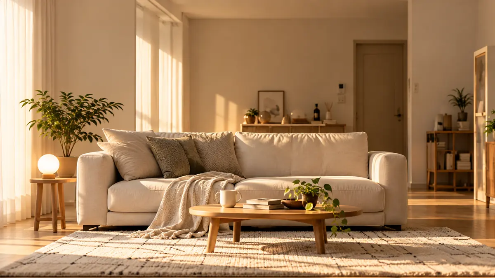
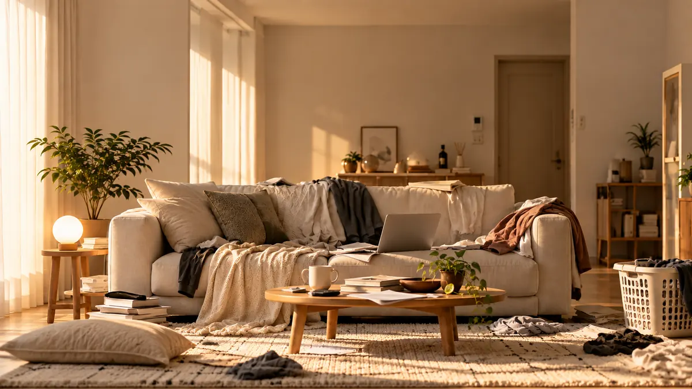
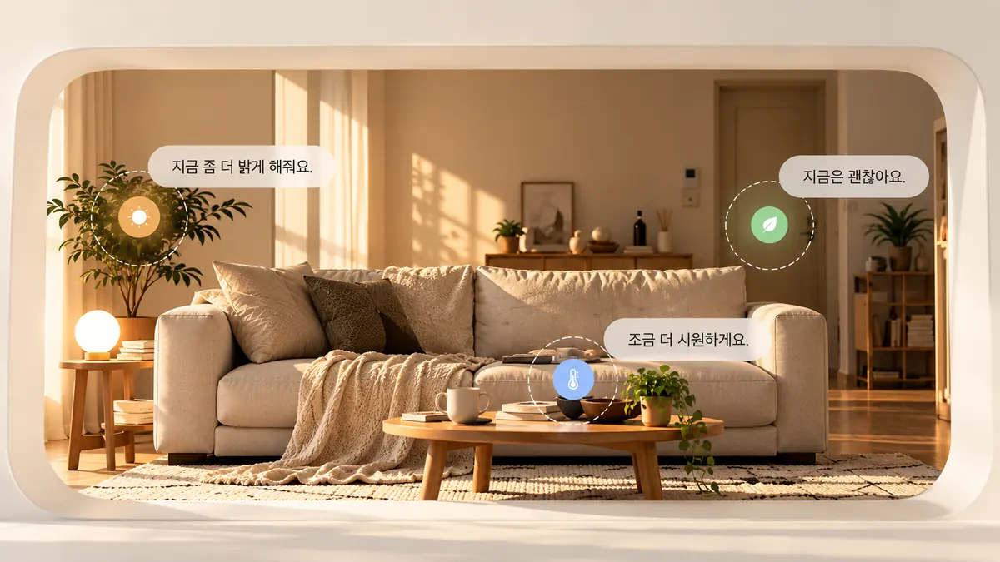
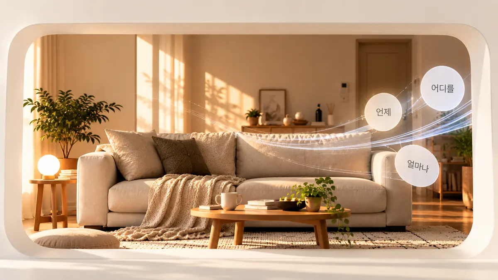
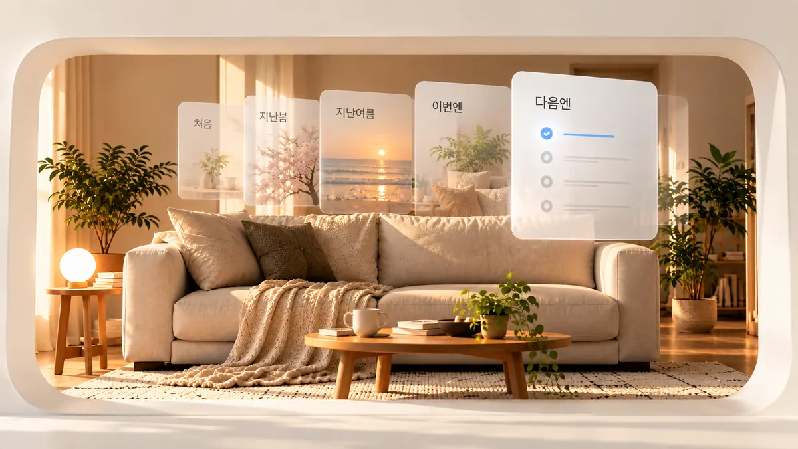
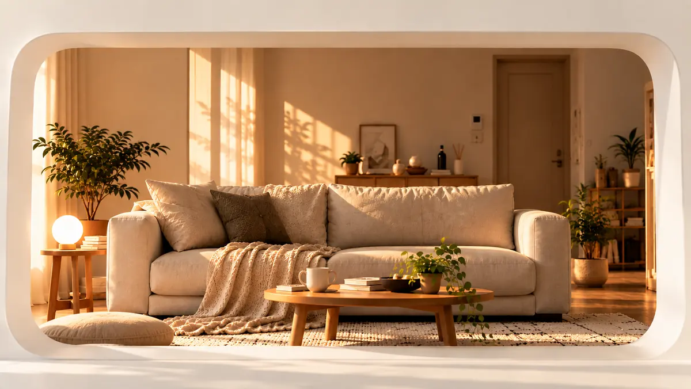

01 HOME
하루가 어떻든,집은 내 편.
잘한 날도, 지친 날도.
돌아오면 나를 받아주는 곳.
02 HOME
그런데 어느 순간,내가 집을 돌보고 있습니다.
생활은 계속되고,
신경 쓸 일도 다시 생깁니다.
02 HOME
집이 쉬는 곳에서,생각할 일이 됩니다.
지금 해야 하나.
이 정도면 괜찮은 걸까.
03 GOOD HOME
완벽한 집보다,걱정을 덜 주는 집.
필요한 곳은 돌보고.
괜찮은 곳은 그대로.
04 LET GO
집을 신경 쓰는 일까지,내 일이 아니어도 됩니다.
언제, 어디를, 얼마나.
필요한 순간의 판단부터.
05 MEMORY
처음부터 다시,설명하지 않아도 되도록.
지난 우리 집을 기억하고,
다음도 이어서.
06 MOOHAE CARE
집은 계속,내 편이어야 하니까.
우리 집을 알아가고,
필요한 관리를 이어가는 방법.






지금 해야 하나.여기도 해야 하나.어디부터 하지.다음은 언제지.이 정도면 괜찮나. 언제어디를얼마나 처음지난번다음
CARE 알아보기 →